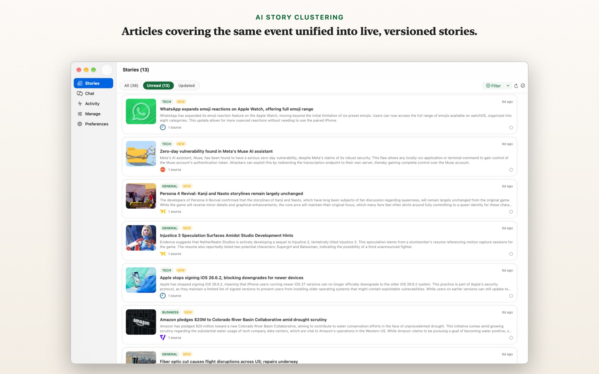
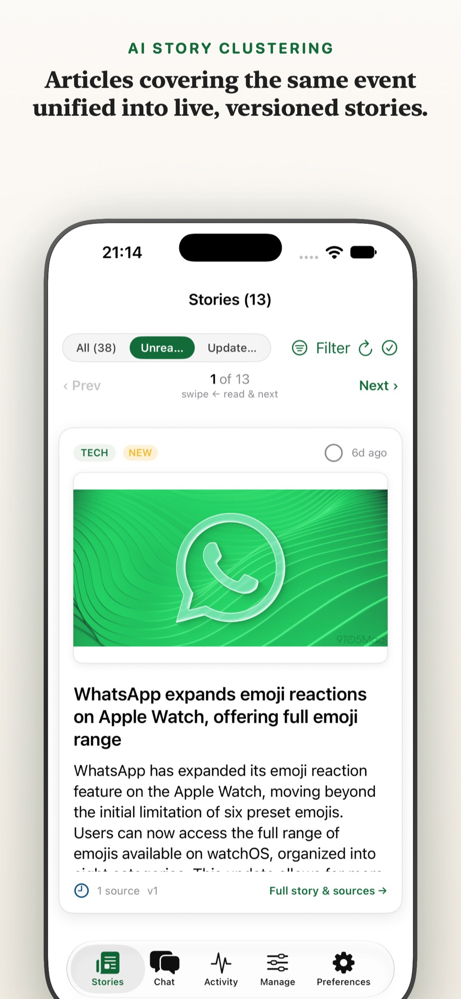
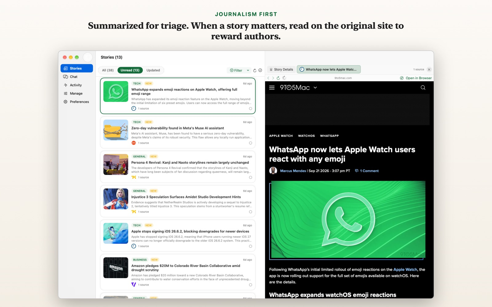
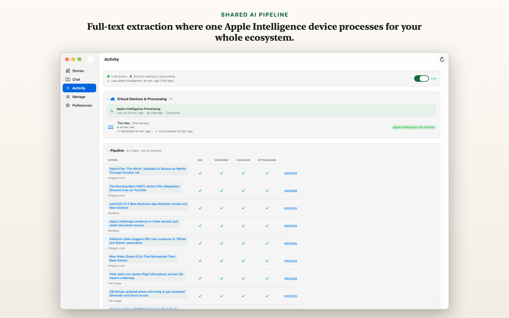
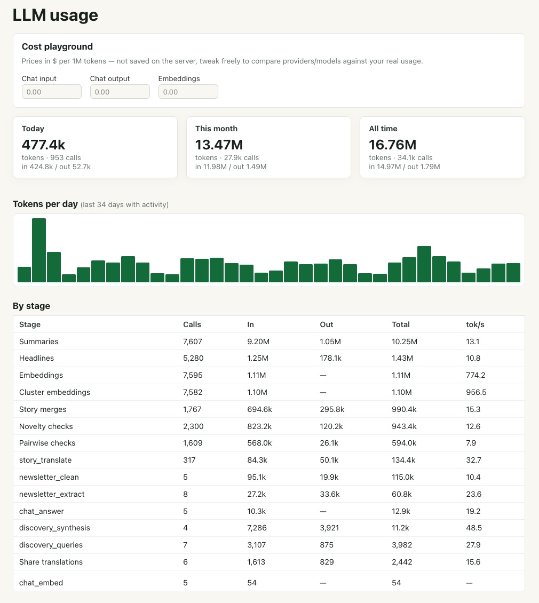

약속 01
계속 최신으로 유지되는 묶음
중복 보도는 하나의 스토리가 됩니다. 새로운 사실이 들어오면 요약을 그 자리에서 다듬고, 읽은 스토리는 가짜 미읽음이 아니라 업데이트됨 배지와 함께 다시 보여줍니다.
NewsGator는 같은 사건을 다루는 모든 기사를 하나의 살아 있는 스토리로 묶고, 새로운 사실이 들어오면 중립적인 요약을 계속 다듬으며, 과장 없는 정직한 제목을 붙인 뒤, 더 읽고 싶을 때는 원문 발행처로 보내드립니다.
두 가지 엔진: Apple Intelligence로 구동되는 네이티브 Apple 앱, 또는 직접 호스팅하는 NewsGator 서버.
중복 보도는 하나의 스토리가 됩니다. 새로운 사실이 들어오면 요약을 그 자리에서 다듬고, 읽은 스토리는 가짜 미읽음이 아니라 업데이트됨 배지와 함께 다시 보여줍니다.
모든 스토리에는 무슨 일이 있었는지 분명히 알려 주는 사실형 제목이 붙습니다. 클릭을 유도하는 과장 제목은 없습니다.
요약은 빠르게 판단하기 위한 도구입니다. 한 번 탭하면 원문 발행처가 열리고, 방문·구독·광고 조회는 실제로 취재한 기자와 매체에 돌아갑니다.
NewsGator는 여러 출처를 읽되, 같은 이야기를 다섯 번 반복해서 읽고 싶지 않은 사람을 위해 만들어졌습니다.
RSS 피드, IMAP 뉴스레터, FreshRSS·Miniflux·Inoreader 같은 동기화 리더 계정을 가져오세요. OPML 가져오기로 설정도 빠르게 끝낼 수 있습니다.
원문 전체를 가져와 같은 실제 사건을 다루는 모든 기사를 묶고, 중립적인 요약을 작성한 뒤 사실형 제목을 붙입니다.
짧은 스토리부터 읽고, 중요할 때 원문 발행처를 열어 보세요. 나중에는 아카이브에 질문하고, 스토리를 공유하거나 정리된 스토리 RSS 피드를 구독할 수도 있습니다.
여러분의 환경에 맞는 방식을 고르세요. Apple 기기에서 인프라 없이 쓰거나, 가정용으로 완전한 셀프 호스팅 서버를 운영할 수 있습니다.
iPhone, iPad, Mac용 네이티브 앱으로, 먼저 Apple Private Cloud Compute를 사용하고 필요할 때 온디바이스 모델로 이어집니다. 라이브러리와 읽음 상태는 iCloud를 통해 동기화됩니다.
NewsGator 서버를 직접 실행하고, oMLX, Ollama, llama.cpp, LM Studio 또는 원하는 다른 OpenAI 호환 엔드포인트를 연결하세요.
스토리 아카이브에 질문하고, 근거와 출처가 있는 답변을 받으세요.
IMAP 뉴스레터도 피드와 같은 스토리 파이프라인으로 들어갑니다.
FreshRSS, Miniflux 또는 Inoreader 호환 계정을 연결하세요.
스토리에 새로운 사실이 추가되어도 읽음 상태는 정직하게 유지됩니다.
라이브러리를 처음부터 다시 만들지 않고도 피드 목록을 가져오고 내보낼 수 있습니다.
스토리 요약을 공유하면서도 원문 기사로 바로 연결할 수 있습니다.
정리된 스토리 아카이브 자체를 어떤 RSS 리더에서든 다시 구독할 수 있습니다.
하나의 셀프 호스팅 인스턴스로도 가족 구성원을 모두 한 계정으로 합치지 않고 함께 사용할 수 있습니다.
iPhone과 Mac 앱, 그리고 셀프 호스팅 서버의 웹 앱에서 직접 캡처한 최신 화면입니다.





NewsGator는 무엇을 읽을 가치가 있는지 빠르게 판단하도록 돕고, 그다음에는 조용히 물러납니다. 광고도, 타사 추적기도, 분석도 없습니다.